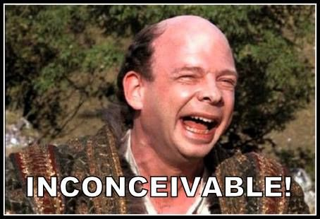

- Fri 19 March 2021
- Software Engineering
- #java, #strings, #unicode, #dlp

Today I inconceivably discovered that String.length() doesn’t mean what I thought it did. I knew it wasn’t the number of bytes that it took to store the string, so I assumed it was the number of logical characters in the string. However, depending on your definition of ‘logical characters’, that might not be correct at all.
How long is this string?
“Hey good looking 😉”
123456789012345678
Based on the above, I’d say the string is 18 characters long. But String.length() returns 19. Why? Obviously something to do with that pesky emoji...
A String in Java is an immutable array of char. String.length() is the length of that array i.e. the number of instances of char comprising the string. A char is a primitive, which has a defined size of two bytes.
Why two bytes? I assume a big reason for this is because Java uses UTF-16 as its native byte-level representation of strings. UTF-16’s name refers to the 16 bits (2 bytes) in each “code unit”. UTF-16 uses either one or two code units to refer to any character (code point) in the Unicode standard. The 😉 emoji requires two. Because 16 bit code units are the building blocks of UTF-16 encodings, and Java chose UTF-16 to store strings internally, a char being two bytes wide makes good sense.
So as it turns out, String.length() actually gives you the count of the number of code units required to store the string in a UTF-16 representation, not the number of ‘logical characters’ - or code points as Unicode calls them - in your string. Let’s look at our example again:
“Hey good looking 😉”
- Logical length/number of code points: 18
- String.length(): 19
- Number of bytes to store in UTF-16: 19 * 2 = 38
- Number of bytes to store in UTF-8: 21
I should point out that this problem isn’t just about Emoji - it’s about any characters outside of the BMP. So is String.length()
defined in a dumb way? No, it’s exactly what you want in many cases given the choice of UTF-16 for an internal representation.
It works great when doing internal stuff in a Java application and you can pretty much ignore this problem. But be careful when
talking to third-party APIs. In these scenarios you’ll likely be dealing with byte counts or code point counts.
I assumed String.length() would work out correctly with the latter in Google’s DLP API, but I was wrong.
One way to get the logical length of a string variable foo, AKA the code point count, is as follows:
foo.codePointCount(0, foo.length())
Also, here’s a handy function that’s not in the standard library, but should be?
def unicodeSubstring(s: String, start: Int, stop: Int): String = {
s.substring(s.offsetByCodePoints(0, start), s.offsetByCodePoints(0, stop))
}